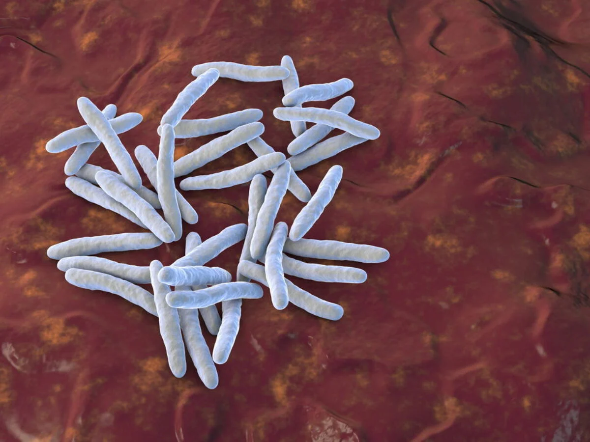

3° Notícia
Bactérias extremófilas e agricultura espacial redefinem os limites da sobrevivência
Pesquisas recentes em astrobiologia no Brasil investigaram como bactérias e arqueas sobrevivem em ambientes extremos, desde vulcões ativos na Antártida até lagoas hipersalinas e câmaras que simulam a intensa radiação ultravioleta do espaço.
- O avanço: Experimentos expuseram microrganismos a faixas de radiação espacial inexistentes na superfície terrestre e avaliaram como minerais primitivos concentram moléculas orgânicas.
- Por que é incrível: Além de revelar quais organismos poderiam resistir a viagens interplanetárias ou habitar luas geladas, os dados impulsionam a agricultura espacial para futuras bases humanas na Lua e em Marte.
